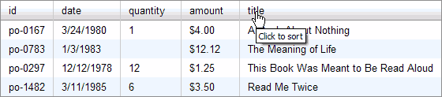

<?php 
$title="Yahoo! UI Library: DataTable";
$section="datatable";
$component="DataTable Control";
$highlightSyntax = true;
$releasenotes = true;
include "../inc/header.inc";
?>

<div id="yui-main">
<div class="yui-b">
  <div class="yui-ge">
      <div class="yui-u first">

<div id="promo" class="component">
    <h1>DataTable</h1>

    <p>The DataTable control provides a simple yet powerful API to display screen-reader accessible tabular data on a web page. Notable features include sortable columns, pagination, scrolling, row selection, resizeable columns, and inline cell editing.</p>
   
    <p>YUI community member Daniel Barreiro (screen name Satyam) has contributed two terrific articles on the YUI DataTable Control on YUIBlog:</p>
    
    <ul>
        <li><a href="http://yuiblog.com/blog/2008/10/15/datatable-260-part-one/">Working with the YUI DataTable Control, Part 1: Getting Started</a></li>
        <li><a href="http://yuiblog.com/blog/2008/10/27/datatable-260-part-two/">Working with the YUI DataTable, Part 2: Changing the Contents of the DataTable</a></li>
    </ul>
    
    <p>In addition to reading this User's Guide and the canonical <a href="http://developer.yahoo.com/yui/examples/datatable/">DataTable examples</a> by DataTable author Jenny Han Donnelly, we strongly recommend that you review Satyam's work in preparing for your DataTable implementation.</p>
  
  <p><strong>Note: </strong>The 2.6.0 release of DataTable introduces the ScrollingDataTable and CellEditor classes, the Paginator widget is now offered as a standalone component, and significant changes have been applied to DataTable's pagination and sorting architectures. While backward compatibility has been maintained whenever possible, the Paginator widget is now an optional dependency, and custom extensions to inline cell editing or server-side pagination and/or sorting will likely need to be updated to be compatible with the new models. Implementers who are upgrading from an earlier version are strongly advised to read the <a href="#upgrade">Upgrades Notes</a>.</p>
  
  <div>
    <h4>On This Page:</h4>
    <ul>
      <li><a href="#upgrade">Upgrade Notes</a></li>
      <li><a href="#start">Getting Started</a></li>
      <li><a href="#instantiating">Instantiating DataTable</a></li>
      <li><a href="#basic">Basic Features</a></li>
      <li><a href="#data">DataRetrieval</a></li>
      <li><a href="#events">Custom Events, "doBefore" Abstract Methods, and "onEvent" Built-in Event Handlers</a></li>
      <li><a href="#skinning">Skinning DataTable</a></li>
      <li><a href="#knownissues">Known Issues</a></li>
      <li><a href="#mobile">YUI on Mobile Devices</a></li>
      <li><a href="#support">Support &amp; Community</a></li>
      <li><a href="#filingbugs">Filing Bugs and Feature Requests</a></li>
    </ul>
  </div>
  
<?php
include('../inc/quicklinks.inc');
?>
  
</div>

<h2 id="upgrade" class="first">Upgrade Notes</h2>

<p>Users new to DataTable can skip this section and proceed directly to the Getting Started section. Implementers who are upgrading from previous versions should note the following changes for version 2.6.0:

<ul class="jump">
<li>Paginator has been extracted as a standalone class and optional dependency.</li>

<li>Functionality for xy-scrollability has been ported to YAHOO.widget.ScrollingDataTable, a subclass of YAHOO.widget.DataTable. Non-scrolling DataTables will no longer generate any extraneous markup that is an artifact of the scrolling architecture. Only ScrollingDataTables will generate the additional markup needed to support xy-scrolling. Implementers can instantiate a ScrollingDataTable directly by calling <code>new YAHOO.widget.ScrollingDataTable</code>, or pass <code>{scrollable:true}</code> into the constructor for DataTable, and a ScrollingDataTable instance will be returned.</li>

<li>Inline cell editing functionality has been re-implemented as YAHOO.widget.CellEditor and related subclasses. The following methods are no longer supported:
    <ul>
    <li><code>DataTable.editCheckbox()</code> has been <strong>removed</strong>. The CheckboxCellEditor class should be used instead.</li>
    <li><code>DataTable.editDate()</code> has been <strong>removed</strong>. The DateCellEditor class should be used instead.</li>
    <li><code>DataTable.editDropdown()</code> has been <strong>removed</strong>. The DropdownCellEditor class should be used instead.</li>
    <li><code>DataTable.editRadio()</code> has been <strong>removed</strong>. The RadioCellEditor class should be used instead.</li>
    <li><code>DataTable.editTextarea()</code> has been <strong>removed</strong>. The TextareaCellEditor class should be used instead.</li>
    <li><code>DataTable.editTextbox()</code> has been <strong>removed</strong>. The TextboxCellEditor class should be used instead.</li>
    <li><code>showCellEditorBtns()</code> has been <strong>removed</strong>. The CellEditor method renderBtns()</code> should be used instead.</li>
    <li><code>editorUpdateEvent</code> has been <strong>removed</strong>.</li>
    <li><code>resetCellEditor()</code> has been renamed to <code>destroyCellEditor()</code>.</li>
    </ul>
</li>

<li>The values for CellEditor checkboxOptions, dropdownOptions, and radioOptions must be either a simple Array or an Array of object literals with properties "value" and "label". Backward compatibility is not being supported in this area, so please update your implementations as needed.</li>

<li>A new CellEditor property asyncSubmitter can be used to submit input values and will block the DataTable UI (via new DataTable methods <code>disable()</code> and <code>undisable()</code>) until the callback function is executed to finish the transaction.</li>

<li>The CellEditor's "Save" and "Cancel" buttons now have configurable labels.</li>

<li>CellEditor validator functions, including the built-in function YAHOO.widget.DataTable.validateNumber must return undefined for invalid values instead of null.</li>

<li>Pagination and sorting have been significantly reworked to better support dynamically driven DataTables. As a result, the following important changes have been made:
    <ul>
    <li><strong>Removed</strong> support for all "magic meta" fields. Server-provided values, such as totalRecords will need to be explicitly updated by custom implementation code as described in the <a href="#dynamicdata">Server-side Sorting and Pagination of Dynamic Data</a> section.</li>

    <li>The following APIs have been <strong>removed</strong>:</li>
        <ul>
        <li><code>paginationEventHandler</code> Attribute</li>
        <li><code>handleSimplePagination()</code></li>
        <li><code>handleDataSourcePagination()</code></li>     
        <li><code>updatePaginator()</code></li>
        <li><code>showPage()</code></li>
        <li><code>formatPaginator()</code></li>
        <li><code>formatPaginationDropdown()</code></li>
        <li><code>formatPaginatorLinks()</code></li>
        </ul>
    <li>The <code>dynamicData</code> Attribute has been added to better support server-side pagination and/or sorting.</li>
    <li>The <code>onPaginatorChange()</code> method has been renamed to <code>onPaginatorChangeRequest()</code></li>
    <li><strong>Removed</strong> backward compatibility support for the <code>paginated</code> Attribute and the object literal <code>paginator</code> Attribute value. Implementers must use the Paginator class to populate the <code>paginator</code> Attribute.</li>
    </ul>
</li>

<li>The following APIs have been changed from static class properties to instance Attributes, to be set via the initial config or <code>myDataTable.set()</code>:
    <ul>
    <li><code>MSG_EMPTY</code></li>
    <li><code>MSG_ERROR</code></li>
    <li><code>MSG_LOADING</code></li>
    <li><code>COLOR_COLUMNFILLER</code> (moved to ScrollingDataTable class)</li>
    </ul>
</li>

<li>The formatTheadCell() method been changed from static a static method to an instance method with an update to its argument signature.</li>

<li>The initEvent will fire when rows are rendered from an initialized state, and the renderEvent will always fire when rows are rendered, and also when the  underlying DOM incrementally changes (such as adding or deleting rows or Columns). This is a change from prior behavior, when the the renderEvent would *not* fire if the initEvent was fired and only when the entire view was rendered (such as a new page load).</li>
    
<li>For consistency with other "doBefore" abstract methods, <code>doBeforeShowCellEditor()</code> now returns <code>true</code> by default and returns <code>false</code> to cancel showing the cell editor.</li>

<li>The Column property <code>minWidth</code> default value is now <code>null</code>.</li>

<li>Added Column property <code>maxAutoWidth</code>.</li>

<li>In the generated markup, the primary data TBODY is (once again) in the DOM before the message TBODY element.</li>
 
<li>Resizeable Columns now create an additional resizer liner DIV element between the TH element and the liner DIV element. Implementers are advised to access the liner DIV elements via Column method <code>getThLinerEl()</code> rather than directly accessing the DOM via TH.firstChild.</li>
 
<li>TR element IDs are now assigned with the corresponding Record ID, and the heretofore unused TD IDs have been removed.</li>
 
<li>All CSS classes representing Column states are now assigned directly on TH and TD elements, not on liner DIV elements.</li>
 
</ul>


<h2 id="start">Getting Started</h2>

<p>To use the DataTable control, include the following source files in your web page.</p>

<textarea name="code" class="HTML" cols="60" rows="1">
&lt;!--CSS file (default YUI Sam Skin) --&gt;
&lt;link type="text/css" rel="stylesheet" href="http://yui.yahooapis.com/<?php echo($yuiCurrentVersion);?>/build/datatable/assets/skins/sam/datatable.css"&gt;

&lt;!-- Dependencies --&gt;
&lt;script type="text/javascript" src="http://yui.yahooapis.com/<?php echo($yuiCurrentVersion);?>/build/yahoo-dom-event/yahoo-dom-event.js"&gt;&lt;/script&gt;
&lt;script type="text/javascript" src="http://yui.yahooapis.com/<?php echo($yuiCurrentVersion);?>/build/element/element-beta-min.js"&gt;&lt;/script&gt;
&lt;script type="text/javascript" src="http://yui.yahooapis.com/<?php echo($yuiCurrentVersion);?>/build/datasource/datasource-min.js"&gt;&lt;/script&gt;

&lt;!-- OPTIONAL: JSON Utility (for DataSource) --&gt;
&lt;script type="text/javascript" src="http://yui.yahooapis.com/<?php echo($yuiCurrentVersion);?>/build/json/json-min.js"&gt;&lt;/script&gt;

&lt;!-- OPTIONAL: Connection Manager (enables XHR for DataSource) --&gt;
&lt;script type="text/javascript" src="http://yui.yahooapis.com/<?php echo($yuiCurrentVersion);?>/build/connection/connection-min.js"&gt;&lt;/script&gt;

&lt;!-- OPTIONAL: Get Utility (enables dynamic script nodes for DataSource) --&gt;
&lt;script type="text/javascript" src="http://yui.yahooapis.com/<?php echo($yuiCurrentVersion);?>/build/get/get-min.js"&gt;&lt;/script&gt;

&lt;!-- OPTIONAL: Drag Drop (enables resizeable or reorderable columns) --&gt;
&lt;script type="text/javascript" src="http://yui.yahooapis.com/<?php echo($yuiCurrentVersion);?>/build/dragdrop/dragdrop-min.js"&gt;&lt;/script&gt;

&lt;!-- OPTIONAL: Calendar (enables calendar editors) --&gt;
&lt;script type="text/javascript" src="http://yui.yahooapis.com/<?php echo($yuiCurrentVersion);?>/build/calendar/calendar-min.js"&gt;&lt;/script&gt;

&lt;!-- Source files --&gt;
&lt;script type="text/javascript" src="http://yui.yahooapis.com/<?php echo($yuiCurrentVersion);?>/build/datatable/datatable-min.js"&gt;&lt;/script&gt;
</textarea>

<?php
include "../inc/include-notice.inc";
?>

<h3>Object Model and DOM Overview</h3>

<p>DataTable creates an internal ColumnSet object to define the header cells for the <code>&lt;thead&gt;</code> and an internal RecordSet object to locally hold data for the rows of the table. The ColumnSet is created using the Column definitions passed in via the constructor, and the RecordSet is created using the ColumnSet object and populated with data provided by the DataSource.</p>

<ul class="jump">
<li><strong>ColumnSet</strong> The ColumnSet is a set of Column instances. Each Column represents a field of data from the DataSource. Each Column is assigned
    <ul>
    <li>a unique key which names the Column (one is created if not provided)</li>
    <li>a field which maps to a field defined in the DataSource schema</li>
    <li>a key index which represents its order within the ColumnSet</li>
    <li>an ID which is a globally unique identifier across all ColumnSets</li>
    </ul>
</li>

<li><strong>RecordSet</strong> The RecordSet is a set of Record instances, each of which represents a row of data. Each Record is assigned
    <ul>
    <li>a globally unique ID, which remains constant regardless of sort order</li>
    <li>a RecordSet index which represents its current sort order index within the RecordSet</li>
    </ul>
</li>

<li><strong>DOM elements</strong> In the DOM, a <code>&lt;table&gt;</code> element contains a collection of <code>&lt;tr&gt;</code> elements. Each <code>&lt;tr&gt;</code> is assigned a Record instance to display, and its unique DOM ID is assigned its corresponding Record's ID. If the DataTable is paginated, then the <code>&lt;table&gt;</code> will show only a subset of the entire RecordSet.</li>

<li><strong>DataTable</strong> The DataTable class manages the interaction between the ColumnSet, the RecordSet, and DOM Elements and exposes the API through which developers can build an configure their tables.</li>

<li><strong>ScrollingDataTable</strong> The ScrollingDataTable class extends the DataTable class to add functionality specific to xy-scrolling.</li>
</ul>

<p>The markup for a DataTable instance starts with the implementer-defined container, into which a <code>&lt;table&gt;</code> element are created, with a typical <code>&lt;table&gt;</code> element, but with two <code>&lt;tbody&gt;</code> elements: a message <code>&lt;tbody&gt;</code> element to display stateful messages such as "Loading data..." or "No data found" and then a primary <code>&lt;tbody&gt;</code> element to display cells of data.</p>

<p>In the case of a ScrollingDataTable, there are actually two <code>&lt;table&gt;</code> elements, each housed in its own container, identified as the "header container" and the "body container". The <code>&lt;table&gt;</code> in the header container consists of a <code>&lt;table&gt;</code> element with only a <code>&lt;thead&gt;</code> element of Column header <code>&lt;th&gt;</code>s, whose purpose is to remain fixed on the screen when the body cells scroll vertically. The <code>&lt;table&gt;</code> generated into the body container is nearly identical to the <code>&lt;table&gt;</code> created by the DataTable class, with the exception of the <code>&lt;thead&gt;</code> element which is placed offscreen for screenreader consumption only.</p>

<p>The following markup is a generic sample of the DOM elements that are generated by the DataTable class. Note that the assigned CSS class names are meant to be used as hooks to skin or customize the UI. Unique keys are used in classNames after they have been passed through the Column's <code>getSanitizedKey()</code> method, which ensures the string has the correct syntax for className and DOM ID usage (i.e., starts with a letter, and contains only letters, numbers, hyphen, or period).</p>

<textarea style="display: none;" name="code" class="HTML" cols="60" rows="1">
<div id="myContainer" class="yui-dt">
    <div class="yui-dt-mask" style="display: none;"/>
    <table summary="">
        <colgroup>
        <col/>
        <col/>
        <col/>
        <col/>
        <col/>
        </colgroup>
        <thead>
            <tr class="yui-dt-first yui-dt-last">
                <th id="yui-dt0-th-{sanitizedkey}" rowspan="1" colspan="1" class="yui-dt0-col-{sanitizedkey} yui-dt-col-{sanitizedkey} yui-dt-sortable yui-dt-resizeable yui-dt-first yui-dt-asc">
                    <div class="yui-dt-resizerliner">
                        <div id="yui-dt0-th-{sanitizedkey}-liner" class="yui-dt-liner">
                            <span class="yui-dt-label">
                                <a class="yui-dt-sortable" title="Click to sort ascending" href="yui-dt0-href-{sanitizedkey}">Header A</a>
                            </span>
                        </div>
                        <div id="yui-dt0-th-{sanitizedkey}-resizer" class="yui-dt-resizer" style="left: auto; right: 0pt; top: auto; bottom: 0pt; height: 24px;"/>
                    </div>
                </th>
                <th id="yui-dt0-th-{sanitizedkey}" rowspan="1" colspan="1" class="yui-dt0-col-{sanitizedkey} yui-dt-col-{sanitizedkey} yui-dt-sortable yui-dt-resizeable">
                    <div class="yui-dt-resizerliner">
                        <div id="yui-dt0-th-{sanitizedkey}-liner" class="yui-dt-liner">
                            <span class="yui-dt-label">
                                <a class="yui-dt-sortable" title="Click to sort descending" href="yui-dt0-href-{sanitizedkey}">Header B</a>
                            </span>
                        </div>
                        <div id="yui-dt0-th-{sanitizedkey}-resizer" class="yui-dt-resizer" style="left: auto; right: 0pt; top: auto; bottom: 0pt; height: 24px;"/>
                    </div>
                </th>
                <th id="yui-dt0-th-{sanitizedkey}" rowspan="1" colspan="1" class="yui-dt0-col-{sanitizedkey} yui-dt-col-{sanitizedkey} yui-dt-sortable yui-dt-resizeable">
                    <div class="yui-dt-resizerliner">
                        <div id="yui-dt0-th-{sanitizedkey}-liner" class="yui-dt-liner">
                            <span class="yui-dt-label">
                                <a class="yui-dt-sortable" title="Click to sort ascending" href="yui-dt0-href-{sanitizedkey}">Header C</a>
                            </span>
                        </div>
                        <div id="yui-dt0-th-{sanitizedkey}-resizer" class="yui-dt-resizer" style="left: auto; right: 0pt; top: auto; bottom: 0pt; height: 24px;"/>
                    </div>
                </th>
                <th id="yui-dt0-th-{sanitizedkey}" rowspan="1" colspan="1" class="yui-dt0-col-{sanitizedkey} yui-dt-col-{sanitizedkey} yui-dt-sortable yui-dt-resizeable">
                    <div class="yui-dt-resizerliner">
                        <div id="yui-dt0-th-{sanitizedkey}-liner" class="yui-dt-liner">
                            <span class="yui-dt-label">
                                <a class="yui-dt-sortable" title="Click to sort ascending" href="yui-dt0-href-{sanitizedkey}">Header D</a>
                            </span>
                        </div>
                        <div id="yui-dt0-th-{sanitizedkey}-resizer" class="yui-dt-resizer" style="left: auto; right: 0pt; top: auto; bottom: 0pt; height: 24px;"/>
                    </div>
                </th>
                <th id="yui-dt0-th-{sanitizedkey}" rowspan="1" colspan="1" class="yui-dt0-col-{sanitizedkey} yui-dt-col-{sanitizedkey} yui-dt-sortable yui-dt-resizeable yui-dt-last">
                    <div class="yui-dt-resizerliner">
                        <div id="yui-dt0-th-{sanitizedkey}-liner" class="yui-dt-liner">
                            <span class="yui-dt-label">
                                <a class="yui-dt-sortable" title="Click to sort ascending" href="yui-dt0-href-{sanitizedkey}">Header E</a>
                            </span>
                        </div>
                        <div id="yui-dt0-th-{sanitizedkey}-resizer" class="yui-dt-resizer" style="left: auto; right: 0pt; top: auto; bottom: 0pt; height: 24px;"/>
                    </div>
                </th>
            </tr>
        </thead>
        <caption>
            DataTable Caption
        </caption>
        <tbody class="yui-dt-message" style="display: none;">
            <tr class="yui-dt-first yui-dt-last">
                <td colspan="5" class="yui-dt-loading">
                    <div class="yui-dt-liner">
                        Loading...
                    </div>
                </td>
            </tr>
        </tbody>
        <tbody tabindex="0" class="yui-dt-data" style="">
            <tr style="" id="yui-rec0" class="yui-dt-first yui-dt-even">
                <td headers="yui-dt0-th-{sanitizedkey} " class="yui-dt0-col-{sanitizedkey} yui-dt-col-{sanitizedkey} yui-dt-sortable yui-dt-resizeable yui-dt-first yui-dt-asc">
                    <div class="yui-dt-liner">
                        Cell A
                    </div>
                </td>
                <td headers="yui-dt0-th-{sanitizedkey} " class="yui-dt0-col-{sanitizedkey} yui-dt-col-{sanitizedkey} yui-dt-sortable yui-dt-resizeable">
                    <div class="yui-dt-liner">
                        Cell B
                    </div>
                </td>
                <td headers="yui-dt0-th-{sanitizedkey} " class="yui-dt0-col-{sanitizedkey} yui-dt-col-{sanitizedkey} yui-dt-sortable yui-dt-resizeable">
                    <div class="yui-dt-liner">
                        Cell C
                    </div>
                </td>
                <td headers="yui-dt0-th-{sanitizedkey} " class="yui-dt0-col-{sanitizedkey} yui-dt-col-{sanitizedkey} yui-dt-sortable yui-dt-resizeable">
                    <div class="yui-dt-liner">
                        Cell D
                    </div>
                </td>
                <td headers="yui-dt0-th-{sanitizedkey} " class="yui-dt0-col-{sanitizedkey} yui-dt-col-{sanitizedkey} yui-dt-sortable yui-dt-resizeable yui-dt-last">
                    <div class="yui-dt-liner">
                        Cell E
                    </div>
                </td>
            </tr>
            ...
            <tr style="" id="yui-rec3" class="yui-dt-last yui-dt-odd">
                <td headers="yui-dt0-th-{sanitizedkey} " class="yui-dt0-col-{sanitizedkey} yui-dt-col-{sanitizedkey} yui-dt-sortable yui-dt-resizeable yui-dt-first yui-dt-asc">
                    <div class="yui-dt-liner">
                        Cell A
                    </div>
                </td>
                <td headers="yui-dt0-th-{sanitizedkey} " class="yui-dt0-col-{sanitizedkey} yui-dt-col-{sanitizedkey} yui-dt-sortable yui-dt-resizeable">
                    <div class="yui-dt-liner">
                        Cell B
                    </div>
                </td>
                <td headers="yui-dt0-th-{sanitizedkey} " class="yui-dt0-col-{sanitizedkey} yui-dt-col-{sanitizedkey} yui-dt-sortable yui-dt-resizeable">
                    <div class="yui-dt-liner">
                        Cell C
                    </div>
                </td>
                <td headers="yui-dt0-th-{sanitizedkey} " class="yui-dt0-col-{sanitizedkey} yui-dt-col-{sanitizedkey} yui-dt-sortable yui-dt-resizeable">
                    <div class="yui-dt-liner">
                        Cell D
                    </div>
                </td>
                <td headers="yui-dt0-th-{sanitizedkey} " class="yui-dt0-col-{sanitizedkey} yui-dt-col-{sanitizedkey} yui-dt-sortable yui-dt-resizeable yui-dt-last">
                    <div class="yui-dt-liner">
                        Cell E
                    </div>
                </td>
            </tr>
        </tbody>
    </table>
</div>
</textarea>

<h3>Understanding Records, Rows, and DOM Elements</h3>

<p>The DataTable API provides a set of methods for implementers to manipulate underlying data and associated DOM elements, such as <code>addRow()</code>, <code>updateRow()</code>, and <code>deleteRow()</code>. Calling <code>addRow(oData)</code> on the DataTable will add a new Record of data to the end of the RecordSet, and create and populate a new <code>&lt;tr&gt;</code> element at the bottom of the <code>&lt;table&gt;</code> element.  Calling <code>addRow(oData, i)</code> will create a new Record of data and a new <code>&lt;tr&gt;</code> element and insert them into the given index position <code>i</code> of the RecordSet and <code>&lt;table&gt;</code>, respectively.</p>

<p>When pagination is enabled, calling <code>addRow()</code> will always add a Record to the RecordSet, but will only add a <code>&lt;tr&gt;</code> element to the <code>&lt;table&gt;</code> if the new Record is in view within the current page. Implementers should keep this in mind when dealing with RecordSet index values, as these values may or may not be equal to <code>&lt;tr&gt;</code> index values when pagination is enabled.</p>

<h2 id="instantiating">Instantiating DataTable</h2>

<p>A DataTable is instantiated by passing in the following to the constructor:</p>

    <ol>
        <li>An ID string or element reference to a container DIV element to host the rendered markup</li>
        <li>A set of Column definitions</li>
        <li>A DataSource instance to manage data retrieval from a variety of sources, from local JavaScript arrays to remote online servers. Please refer to the <a href="http://developer.yahoo.com/yui/datasource/">DataSource documentation</a> for more information on using this utility.</li>
    </ol>

<textarea style="display: none;" name="code" class="JScript" cols="60" rows="1">
// DataTable constructor syntax
var myDataTable = new YAHOO.widget.DataTable("myContainer", myColumnDefs, myDataSource);
</textarea>


<h3>The Container Element</h3>

<p>Make sure the container element is available in the DOM before instantiating your DataTable, either by placing your script in the HTML body after the markup has been rendered, waiting until the <code>window load</code> DOM event fires, or by using the Event Utility's <code>onAvailable</code> method to programmatically create your DataTable as soon as the container element is available.</p>

<textarea style="display: none;" name="code" class="JScript" cols="60" rows="1">
// Defer instantiation
YAHOO.util.Event.addListener(window, "load", function() {
    var myDataTableDeferred = new YAHOO.widget.DataTable("myContainer", myColumnDefs, myDataSource);
});
</textarea>

<h3>Column Definitions</h3>

<p>The second argument of the DataTable constructor is an array of object literals to define the Columns that are rendered into the table. In the simple example below, we define our DataTable to display three Columns, which we name "fname", "lname", and "age":</p>

<textarea style="display: none;" name="code" class="JScript" cols="60" rows="1">
var myColumnDefs = [
    {key:"fname", label:"First Name"},
    {key:"lname", label:"Last Name"},
    {key:"age", label:"Age"}
];
</textarea>

<p>The following Column properties are supported:</p>

<div class="apisummary">
<table>
<caption>Column properties</caption>
<thead>
    <tr><th>Property</th><th>Type</th><th>Description</th></tr>
</thead>
<tbody>
    <tr><td><code>key</code></td><td>String</td><td>(Required) The unique name assigned to each Column. When a Column <code>key</code> maps to a DataSource <code>field</code>, cells of the Column will automatically populate with the the corresponding data. When a key does not map to a DataSource field, the cell can be populated manually, through the use of a formatter. Keys are also assigned by DataTable to DOM attributes (with a prefix), but they are first sanitized to ensure a correct syntax for className and DOM ID usage. If a key is not defined in the Column definition, one will be auto-generated.</td></tr>
    <tr><td><code>field</code></td><td>String</td><td>The DataSource field mapped to the Column. By default, the field value is assigned to be the Column's key. Implementers may specify a different field explicitly in the Column definition. This feature is useful when mapping multiple Columns to a shared field, since keys must remain unique.</td></tr>
    <tr><td><code>label</code></td><td>String</td><td>By default, the <code>&lt;th&gt;</code> element is populated with the Column's key. Supply a label to display a different header.</td></tr>
    <tr><td><code>abbr</code></td><td>String</td><td>Value for the <code>&lt;th&gt;</code> element's <code>abbr</code> attribute.</td></tr>
    <tr><td><code>children</code></td><td>Object[]</td><td>An array of object literals that define nested child Columns of a Column.</td></tr>
    <tr><td><code>className</code></td><td>String</td><td>A custom CSS className or array of classNames to be applied to every cell of the Column.</td></tr>
    <tr><td><code>editor</code></td><td>String</td><td>String pointer to a CellEditor class.</td></tr>
    <tr><td><code>editorOptions</code></td><td>Object</td><td>Object literal CellEditor-specific configuration options. Please refer to the <a href="http://developer.yahoo.com/yui/docs/module_datatable.html">API documentation</a> for more information on which properties are supported for each type of CellEditor.</td></tr>
    <tr><td><code>formatter</code></td><td>String | HTMLFunction</td><td>A function or a pointer to a function to handle HTML formatting of cell data.</td></tr>
    <tr><td><code>hidden</code></td><td>Boolean</td><td>True if Column is hidden.</td></tr>
    <tr><td><code>maxAutoWidth</code></td><td>Number</td><td>Upper limit pixel width that a Column should auto-size to when its width is not set. Please note that maxAutoWidth validation is executed after cells are rendered, which may cause a visual flicker of content, especially on non-scrolling DataTables.</td></tr>
    <tr><td><code>minWidth</code></td><td>Number</td><td>Minimum pixel width. Please note that minWidth validation is executed after cells are rendered, which may cause a visual flicker of content, especially on non-scrolling DataTables.</td></tr>
    <tr><td><code>resizeable</code></td><td>Boolean</td><td>True if Column is resizeable. The Drag & Drop Utility is required to enable this feature. Only bottom-level and non-nested Columns are resizeble.</td></tr>
    <tr><td><code>selected</code></td><td>Boolean</td><td>True if Column is selected.</td></tr>
    <tr><td><code>sortable</code></td><td>Boolean</td><td>True if Column is sortable.</td></tr>
    <tr><td><code>sortOptions</code></td><td>Object</td><td>Object literal of configurations for sort behavior.
        <ul class="jump">
        <li><strong>defaultDir</strong> <code>"asc"</code>, <code>"desc"</code>, <code>YAHOO.widget.DataTable.CLASS_ASC</code>, or <code>YAHOO.widget.CLASS_DESC</code></li>
        <li><strong>sortFunction</strong> Custom sort function.</li>
        </ul>
    </td></tr>
    <tr><td><code>width</code></td><td>Number</td><td>Pixel width.</td></tr>
</tbody>
</table>
</div>


<h2 id="basic">Basic Features</h2>

<p>The DataTable class and its related classes provides many configuration parameters for you to fine-tune the user experience of your DataTable instance.</p>

<ul class="topspace">
<li><a href="#enhance">Progressive Enhancement of Markup</a></li>
<li><a href="#accessibility">Accessibility Features</a></li>
<li><a href="#format">Custom Cell Formatting</a></li>
<li><a href="#nest">Nested Column Headers</a></li>
<li><a href="#basicsort">Basic Column Sorting</a></li>
<li><a href="#advancedsort">Advanced Column Sorting</a></li>
<li><a href="#paginate">Pagination</a></li>
<li><a href="#scrolling">Scrolling</a></li>
<li><a href="#renderLoop">Adjusting the Render Loop Size</a></li>
<li><a href="#rowselect">Row and Cell Selection</a></li>
<li><a href="#colselect">Column Selection</a></li>
<li><a href="#highlight">Row, Cell and Column Highlighting</a></li>
<li><a href="#colapis">More Column APIs</a></li>
<li><a href="#cellediting">Inline Cell Editing</a></li>
</ul>


<h3>Progressive Enhancement of Markup<a name="enhance"></a></h3>
<p>By progressively enhancing <code>&lt;table&gt;</code> markup that is already on the page,
you can make core content available to end users who do not have
JavaScript enabled, while delivering a fully functional DataTable control to
users who do have JavaScript enabled -- all from the same code base.</p>

<p>To this end, the DataSource accepts an HTML
<code>&lt;table&gt;</code> element as a source of data. The DataTable will parse
the data out of the table, remove it from the DOM, and replace
it with an enhanced control.</p>
  
<textarea style="display: none;" name="code" class="JScript" cols="60" rows="1">&lt;div id="myMarkedUpContainer"&gt;
    &lt;table id="myTable"&gt;
        &lt;thead&gt;
            &lt;tr&gt;
                &lt;th&gt;AAA&lt;/th&gt;
                &lt;th&gt;BBB&lt;/th&gt;
                &lt;th&gt;CCC&lt;/th&gt;
            &lt;/tr&gt;
        &lt;/thead&gt;
        &lt;tbody&gt;
            &lt;tr&gt;
                &lt;td&gt;1&lt;/td&gt;
                &lt;td&gt;bbb&lt;/td&gt;
                &lt;td&gt;ccc&lt;/td&gt;
            &lt;/tr&gt;
            &lt;tr&gt;
                &lt;td&gt;2&lt;/td&gt;
                &lt;td&gt;bbb&lt;/td&gt;
                &lt;td&gt;ccc&lt;/td&gt;
            &lt;/tr&gt;
            &lt;tr&gt;
                &lt;td&gt;3&lt;/td&gt;
                &lt;td&gt;bbb&lt;/td&gt;
                &lt;td&gt;ccc&lt;/td&gt;
            &lt;/tr&gt;
        &lt;/tbody&gt;
    &lt;/table&gt;
&lt;/div&gt;

&lt;script type="text/javascript"&gt;
var myDataSource = new YAHOO.util.DataSource(YAHOO.util.Dom.get("myTable"));
myDataSource.responseType = YAHOO.util.DataSource.TYPE_HTMLTABLE;
myDataSource.responseSchema = {
    fields: [{key:"AAA", parser:"number"},
            {key:"BBB"},
            {key:"CCC"}
    ]
};

var myColumnDefs = [
    {key:"AAA"},
    {key:"BBB"},
    {key:"CCC"}
];

var myDataTable = new YAHOO.widget.DataTable("myMarkedUpContainer", myColumnDefs, myDataSource);
&lt;/script&gt;
</textarea>

<p>Implementers should note that form elements and elements attached to DOM event listeners may not be parsed correctly. Custom parsers should be used to extract data values out of form elements, and formatters should be used to reconstruct form elements programmatically. Likewise, DOM event listeners will be unattached from the original elements and implementers should listen for the corresponding DataTable Custom Events to rewire any lost functionality.</p>

<p>By default, DataSources with <code>responseType = YAHOO.util.DataSource.TYPE_HTMLTABLE</code>, iterate over all TR elements of all TBODY elements of the given TABLE to parse out data. If there are any non-data elements (like summary rows or the message TBODY in DataTable), they should first be removed from the DOM.</p>

<h3>Accessibility Features<a name="accessibility"></a></h3>
<p>Out of the box, the DataTable is accessible via screen readers and keyboard-navigable.
Please take advantage of the following additional features to further enhance accessibility:</p>

<textarea style="display: none;" name="code" class="JScript" cols="60" rows="1">/* Supply abbr values for THs */
var myColumnDefs = [
    {label:"Amt Due", abbr:"Amount Due"},
    {label:"Rec'd", abbr: "Received"},
    {label:"YTD", abbr:"Year to Date"}
];

/* Supply caption and/or summary values for the TABLE */
var myDataTable =
        new YAHOO.widget.DataTable("myContainer",myColumnDefs,myDataSource,
        {caption:"My Caption", summary:"My Summary"});
</textarea>

<h3>Custom Cell Formatting<a name="format"></a></h3>
<p>The DataSource class provides a set of built-in static functions to format certain
well-known types of data. In your Column definition, if you set a Column's <code>formatter</code>
to <code>YAHOO.widget.DataTable.formatDate,</code> that
function will render data of type Date with the default syntax of "MM/DD/YYYY". If you would like to bypass a
built-in formatter in favor of your own, you can point a Column's
<code>formatter</code> to a custom function that you define.</p>

<p>As of the 2.3.0 release, the static formatter functions are called within the
scope of the DataTable instance. Also as a convenience, the following string
shortcuts may be used to point to the built-in formatter functions:</p>

<ul>
<li><code>"button"</code> points to <code>YAHOO.widget.DataTable.formatButton</code></li>
<li><code>"checkbox"</code> points to <code>YAHOO.widget.DataTable.formatCheckbox</code></li>
<li><code>"currency"</code> points to <code>YAHOO.widget.DataTable.formatCurrency</code></li>
<li><code>"date"</code> points to <code>YAHOO.widget.DataTable.formatDate</code></li>
<li><code>"dropdown"</code> points to <code>YAHOO.widget.DataTable.formatDropdown</code></li>
<li><code>"email"</code> points to <code>YAHOO.widget.DataTable.formatEmail</code></li>
<li><code>"link"</code> points to <code>YAHOO.widget.DataTable.formatLink</code></li>
<li><code>"number"</code> points to <code>YAHOO.widget.DataTable.formatNumber</code></li>
<li><code>"radio"</code> points to <code>YAHOO.widget.DataTable.formatRadio</code></li>
<li><code>"text"</code> points to <code>YAHOO.widget.DataTable.formatText</code></li>
<li><code>"textarea"</code> points to <code>YAHOO.widget.DataTable.formatTextarea</code></li>
<li><code>"textbox"</code> points to <code>YAHOO.widget.DataTable.formatTextbox</code></li>
</ul>

<textarea style="display: none;" name="code" class="JScript" cols="60" rows="1">// Define a custom format function
var myFormatDate = function(elCell, oRecord, oColumn, oData) {
    var oDate = oData;
    var sMonth;
    switch(oDate.getMonth()) {
        case 0:
            sMonth = "Jan";
            break;
        case 1:
            sMonth = "Feb";
            break;
        case 2:
            sMonth = "Mar";
            break;
        case 3:
            sMonth = "Apr";
            break;
        case 4:
            sMonth = "May";
            break;
        case 5:
            sMonth = "Jun";
            break;
        case 6:
            sMonth = "Jul";
            break;
        case 7:
            sMonth = "Aug";
            break;
        case 8:
            sMonth = "Sep";
            break;
        case 9:
            sMonth = "Oct";
            break;
        case 10:
            sMonth = "Nov";
            break;
        case 11:
            sMonth = "Dec";
            break;
    }
    elCell.innerHTML = sMonth + " " + oDate.getDate()  + ", " + oDate.getFullYear();
};

var myColumnDefs = [
    {key:"Date", formatter: myFormatDate}, // Uses custom function myFormatDate
    {key:"Contact",formatter: "email"} // Uses built-in function YAHOO.widget.DataTable.formatEmail
];
</textarea>

<h3>Nested Column Headers<a name="nest"></a></h3>
<p>If you'd like your DataTable to display nested headers, the control will
automatically correlate the correct set of headers to each <code>&lt;td,&gt;</code> element in order
to support screen reader accessibility. In your Column definitions, any given
Column object literal can itself host an array of Column object literals. Use
the <code>children</code> property to assign descendant Columns. The
following Column properties will cascade to descendant Columns if they are defined by a
parent but not defined explicitly by children.</p>
    
    <ul>
        <li><code>className</code></li>
        <li><code>editor</code></li>
        <li><code>editorOptions</code></li>
        <li><code>formatter</code></li>
        <li><code>resizeable</code></li>
        <li><code>sortable</code></li>
        <li><code>width</code></li>
    </ul>


<textarea style="display: none;" name="code" class="JScript" cols="60" rows="1">var myColumnDefs = [
    {key:"page", label:"Page URL"},
    {key:"Statistics", className:"myClass", children:[ // className will cascade to children
        {key:"Visits",
            children: [
                {key:"visitsmonth", label:"This Month"},
                {key:"visitsytd", label:"YTD", abbr:"Year to Date"}
            ]
        },
        {key:"Views",
            children: [
                {key:"viewsmonth", label:"This Month"},
                {key:"viewsytd", label:"YTD", abbr:"Year to Date"}
            ]
        }
    ]}
];
</textarea>

<p>Please note that not all feature are compatible with nested Columns. Specifically, Columns that have children can not be resized, and Columns that are children can neither be hidden/shown nor dragged-and-dropped.</p>

<h3>Basic Column Sorting<a name="basicsort"></a></h3>
<p>By default, if a Column is defined with <code>sortable:true</code>, then
clicking on the Column header will execute a basic sort function that supports
comparisons of Strings, Numbers, and Dates.</p>

<textarea style="display: none;" name="code" class="JScript" cols="60" rows="1">var myColumnDefs = [
    {key:"name", label:"Dog's Name", sortable:true},
    {key:"age", label:"Dog's Age", formatter:"number", sortable:true},
    {key:"bday", label:"Dog's Birthday", formatter:"date", sortable:true}
];
</textarea>

<p>Keep in mind that sorting a Column first sorts the data in the underlying
RecordSet and then updates the DOM UI to reflect this new sort order. Therefore,
the type of the data (e.g., String, Number, Date, etc.) held in the RecordSet
determines the sort algorithm, <em>not</em> the type as defined in your Column definition
<code>formatter</code> property.</p>

<p>In general, the RecordSet expects to hold data in native JavaScript types.
For instance, a date is expected to be a JavaScript Date instance, not a
string like "4/26/2005" in order to sort properly. Converting data
types as data comes into your RecordSet is enabled through the <code>parser</code>
property in the <code>fields</code> array of your DataSource's <code>responseSchema</code>.
This is especially useful when data is coming over XHR as a String and needs to
be converted to a Number, Boolean, Date, etc. A custom function can be defined,
or you can use one of the static built-in functions:</p>

<textarea style="display: none;" name="code" class="JScript" cols="60" rows="1">myDataSource.responseSchema = {
    fields: [{key:"name", parser:"string"}, // Stores incoming data as Strings
            {key:"age", parser:"number"}, // Stores incoming data as Numbers
            {key:"bday", parser:"date"}, // Stores incoming data as Dates
            {key:"custom", parser:myParser} // Applies a custom function to incoming data
    ]
};
</textarea>

<p>If your initial data is already sorted, be sure to specify the DataTable config
property <code>sortedBy</code> to display the proper UI at instantiation. The value 
of the property should be either the class constant <code>YAHOO.widget.DataTable.CLASS_ASC</code>
or <code>YAHOO.widget.DataTable.CLASS_DESC</code>. Now when the user goes to sort this Column,
DataTable will know to sort it in the correct (opposite) direction. Note that
setting the <code>sortedBy</code> property does not perform a sort on the Column,
it merely applies the appropriate CSS when the DataTable loads.</p>

<textarea style="display: none;" name="code" class="JScript" cols="60" rows="1">// The first click on the "receivedDate" Column will sort in descending order
var myDataTable = new YAHOO.widget.DataTable("sorted", myColumnDefs, myDataSource, {sortedBy:{key:"receivedDate", dir:YAHOO.widget.DataTable.CLASS_ASC}});
</textarea>

<h3>Advanced Column Sorting<a name="advancedsort"></a></h3>
<p>The <code>sortOptions</code> property can be used in your Column definitions
to specify more advanced sort options. If a Column's default sort direction should
be in descending order rather than ascending order, as is often the case for
reverse-chronological date fields, be sure to define the <code>defaultDir</code>
property on <code>sortOptions</code>:</p>

<textarea style="display: none;" name="code" class="JScript" cols="60" rows="1">var myColumnDefs = [
    {key:"name", label:"Dog's Name", sortable:true},
    {key:"age", label:"Dog's Age", formatter:"number", sortable:true},
    {key:"bday", label:"Dog's Birthday", formatter:"date", sortable:true, sortOptions:{defaultDir:YAHOO.widget.DataTable.CLASS_DESC}} // First click sorts latest on top
];
</textarea>

<p>Specifying a <code>sortOptions.field</code> value will point the sort to be executed on the given field.</p>

<textarea style="display: none;" name="code" class="JScript" cols="60" rows="1">var myColumnDefs = [
    {key:"name", label:"Dog's Name", sortable:true},
    {key:"age", label:"Dog's Age", formatter:"number", sortable:true},
    {key:"bday_string", label:"Dog's Birthday", sortable:true, sortOptions:{field:"bday_date"}} // Sort occurs on a non-rendered data field
];
</textarea>

<p>More complex data structures may require custom sort algorithms. You can
provide custom sort functions in your Column definition via the
<code>sortOptions</code> property. The code below is an example of how to
implement nested sorting, where clicking on Column2's header will sort by values in
Column2 and, if there are equal values, further sort by values in Column1.</p>

<p>Please note that as of the 2.3.0 release, a single sort function is used for
both ascending and descending sorts.</p>

<textarea style="display: none;" name="code" class="JScript" cols="60" rows="1">// Custom function to sort by Column2 then by Column1
var mySortFunction = function(a, b, desc) {
    // Deal with empty values
    if(!YAHOO.lang.isValue(a)) {
        return (!YAHOO.lang.isValue(b)) ? 0 : 1;
    }
    else if(!YAHOO.lang.isValue(b)) {
        return -1;
    }

    // First compare by Column2
    var comp = YAHOO.util.Sort.compare;
    var compState = comp(a.getData("Column2"), b.getData("Column2"), desc);

    // If values are equal, then compare by Column1
    return (compState !== 0) ? compState : comp(a.getData("Column1"), b.getData("Column1"), desc);
};

var myColumnDefs = [
    {key:"Column1",sortable:true}, // Uses default sort function
    {key:"Column2",sortable:true, // Uses custom sort function
            // Provide sortOptions as an object literal
            sortOptions:{sortFunction:mySortFunction}
    }
];
</textarea>


<h3>Pagination<a name="paginate"></a></h3>
<p>Pagination can be used to reduce the real-estate footprint of DataTables with
large data sets.  As of the 2.5.0 release, implementors should use the new
Paginator class to define pagination layout and behavior for the DataTable.</p>

<textarea name="code" class="JScript" cols="60" rows="1">var myConfigs = {
    paginator : new YAHOO.widget.Paginator({
        rowsPerPage    : 50
    })
};

var myDataTable = new YAHOO.widget.DataTable("myContainer",
    myColumnDefs, myDataSource, myConfigs);
</textarea>

<p>By default, the DataTable will render a set of pagination controls above and below the table:</p>


<h4>Templates and UI components</h4>
<p>The Paginator class uses a template and component architecture to afford the greatest flexibility in choosing how to render the pagination controls.</p>

<textarea name="code" class="JScript" cols="60" rows="1">var myConfigs = {
    paginator : new YAHOO.widget.Paginator({
        rowsPerPage    : 50, // REQUIRED
        totalRecords   : myData.length, // OPTIONAL for local DataSources
                                        // as DataTable will auto-populate

        // use an existing container element
        containers : 'my_pagination',

        // use a custom layout for pagination controls
        template       : "{PageLinks} Show {RowsPerPageDropdown} per page",

        // show all links
        pageLinks : YAHOO.widget.Paginator.VALUE_UNLIMITED,

        // use these in the rows-per-page dropdown
        rowsPerPageOptions : [25,50,100],

        // use custom page link labels
        pageLabelBuilder : function (page,paginator) {
            var recs = paginator.getPageRecords(page);
            return (recs[0] + 1) + ' - ' + (recs[1] + 1);
        }
    })
};

var myDataTable = new YAHOO.widget.DataTable("myContainer",
    myColumnDefs, myDataSource, myConfigs);
</textarea>

<p>This Paginator configuration would result in the following UI:</p>


<p>Paginator instances use the configuration attribute <code>template</code> to describe the markup for rendering the pagination controls.  The template string contains placeholders to identify where the various control elements should be located.  Each placeholder in the template is the class name of a UI component found in the <code>YAHOO.widget.Paginator.ui</code> namespace.</p>

<p>The default template is
<code>&quot;{FirstPageLink} {PreviousPageLink} {PageLinks} {NextPageLink} {LastPageLink}&quot;</code>.</p>

<p>The following UI components are provided in the 2.5.1 release:</p>
<ul>
    <li>FirstPageLink</li>
    <li>PreviousPageLink</li>
    <li>NextPageLink</li>
    <li>LastPageLink</li>
    <li>PageLinks</li>
    <li>RowsPerPageDropdown</li>
    <li>CurrentPageReport</li>
</ul>
<p>For custom pagination controls, create new UI component classes in the <code>YAHOO.widget.Paginator.ui</code> namespace and reference them in your Paginator template.</p>

<p>See the <a href="/yui/docs/module_datatable.html">API docs</a> for Paginator and each UI component class for available configuration.</p>

<h3 id="scrolling">Scrolling</h3>

<p>Scrolling is another way to conserve the UI footprint of larger data sets. In the DataTable control, scrolling can be</p>

<ul>
<li>x-scrolling: horizontal scrolling where Column headers track with body</li>
<li>y-scrolling: vertical scrolling where Column headers are fixed while body scrolls</li>
<li>xy-scrolling: combined horizontal and vertical scrolling where Column headers are fixed vertically but track horizontally</li>
</ul>

<p><strong>Note: </strong>As of the 2.6.0 release, enabling the scrolling feature will actually instantiate a subclass of DataTable, called ScrollingDataTable. This change means that scrolling cannot be enabled or disabled at runtime, and implementers who want the scrolling feature must specify it at instantiation, either by passing in the config <code>scrollable:true</code> to the DataTable constructor, or alternately by calling the ScrollingDataTable 
constructor directly. APIs that are relevant and necesaary only for the scrolling feature have been moved to the ScrollingDataTable subclass and are no longer available from the DataTable class.</p>

<p>Implementers should keep in mind that the scrolling feature inherently entails a performance overhead that may impact user experience. Defining pixel widths for as many Columns as possible, disabling drag-and-drop resizing, and keeping your data size manageable will go a long way towards reducing that overhead.</p>

<p>To enable scrolling, set <code>{scrollable:true}</code> in the DataTable constructor config, or call the ScrollingDataTable constructor directly, and define width and/or height String values. X-scrolling is enabled by only setting a width, y-scrolling is enabled by only setting a height, and xy-scrolling is enabled by setting both. When a height is set, it defines the height of the vertically scrolling body of the table, not including headers.</p>

<textarea style="display: none;" name="code" class="HTML" cols="60" rows="1">
/* enables x-scrolling */
var myDataTableX = new YAHOO.widget.DataTable("myContainer", myColumnDefs, myDataSource, 
    {   scrollable: true,
        width: "40em" // width as a string value
    });
                                             
/* enables y-scrolling */
var myDataTableY = new YAHOO.widget.DataTable("myContainer", myColumnDefs, myDataSource, 
    {   scrollable: true,
        height: "400px" // height as a string value
    });
    
/* enables xy-scrolling */
var myDataTableXY = new YAHOO.widget.DataTable("myContainer", myColumnDefs, myDataSource, 
    {   scrollable: true,
        width: "40em" // width as a string value
        height: "400px" // height as a string value
    });                                      
</textarea>

<h3>Adjusting the Render Loop Size<a name="renderLoop"></a></h3>
<p>In cases where your DataTable needs to display the entirety of a very large set of data, the <code>renderLoopSize</code> config can help manage browser DOM rendering so that the UI thread does not get locked up on very large tables. Any value greater than 0 will cause the DOM rendering to be executed in setTimeout() chains that render the specified number of rows in each loop. The ideal value should be determined per implementation since there are no hard and fast rules, only general guidelines:</p>
 
<ul>
<li>By default renderLoopSize is 0, so all rows are rendered in a single loop. A renderLoopSize > 0 adds overhead so use thoughtfully.</li>
<li>If your set of data is large enough (number of rows X number of Columns X formatting complexity) that users experience latency in the visual rendering and/or it causes the script to hang, consider setting a renderLoopSize.</li>
<li>A renderLoopSize under 50 probably isn't worth it. A renderLoopSize &gt; 100 is probably better.</li>
<li>A data set is probably not considered large enough unless it has hundreds and hundreds of rows.</li>
<li>Having a renderLoopSize &gt; 0 and &lt; total rows does cause the table to be rendered in one loop (same as renderLoopSize = 0) but it also triggers functionality such as post-render row striping to be handled from a separate setTimeout thread.</li>
</ul>

<textarea style="display: none;" name="code" class="HTML" cols="60" rows="1">// Render 100 rows per loop
var myDataTable = new YAHOO.widget.DataTable("myContainer", myColumnDefs, myDataSource, {renderLoopSize: 100});
</textarea>

<h3>Row and Cell Selection Modes<a name="rowselect"></a></h3>
<p>You can enable row selection or cell selection by assigning the built-in
<code>onEventSelectRow</code> event handler to a Custom Event.

<textarea style="display: none;" name="code" class="JScript" cols="60" rows="1">// Enables standard row selection
myDataTable.subscribe("rowClickEvent", myDataTable.onEventSelectRow);
</textarea>

</p><p>The property <code>selectionMode</code> is used to enable or disable
modifier keys and define the multi-selection paradigm. By default,
<code>selectionMode</code> is set to <code>standard</code> which enables the
modifier keys &lt;shift&gt; and &lt;ctrl&gt; to select multiple rows.</p>

<p>Setting <code>selectionMode</code> to <code>single</code> enables row selection
but disables the use of modifier keys for multi-selection.</p>

<textarea style="display: none;" name="code" class="JScript" cols="60" rows="1">// Enables single-mode row selection
myDataTable.set("selectionMode","single");
myDataTable.subscribe("rowClickEvent", myDataTable.onEventSelectRow);
</textarea>

<p>Setting <code>selectionMode</code> to <code>cellblock</code>,
<code>cellrange</code>, or <code>singlecell</code> enables cell selection
in block mode, range mode, or single mode respectively.</p>

<textarea style="display: none;" name="code" class="JScript" cols="60" rows="1">// Enables cell-block selection
myDataTable.set("selectionMode","cellblock");
myDataTable.subscribe("cellClickEvent", myDataTable.onEventSelectCell);

// Enables cell-range selection
myDataTable.set("selectionMode","cellrange");
myDataTable.subscribe("cellClickEvent", myDataTable.onEventSelectCell);

// Enables cell-block selection (modifier keys are disabled)
myDataTable.set("selectionMode","singlecell");
myDataTable.subscribe("cellClickEvent", myDataTable.onEventSelectCell);
</textarea>

<p>Take care that the <code>selectionMode</code> value matches the mode you have enabled. If
you have assigned the <code>onEventSelectCell</code> handler, then <code>selectionMode</code>
needs to be set to "cellblock", "cellrange", or "singlecell" exclusively.
Conversely, the values "standard" and "single" are reserved for DataTables with
row selection enabled. Finally, mixing and matching row and cell
selection paradigms is not recommended.</p>

<p>The methods <code>selectRow()</code> and <code>selectCell()</code> also
allow you trigger selection programmatically:</p>

<textarea style="display: none;" name="code" class="JScript" cols="60" rows="1">// Selects the first row on the page
myDataTable.selectRow(myDataTable.getTrEl(0));

// Selects any cell that receives a checkbox click
myDataTable.subscribe("checkboxClickEvent", function(oArgs){
    var elCheckbox = oArgs.target;
    if(elCheckbox.checked) {
        var elCell = this.getTdEl(elCheckbox);
        this.selectCell(elCell);
    }
});
</textarea>

<p>The following methods allow you to retrieve selected rows and cells as an array:</p>

<textarea style="display: none;" name="code" class="JScript" cols="60" rows="1">// Returns an array of selected Record IDs (across all pages, if pagination is enabled)
myDataTable.getSelectedRows();

// Returns an array of selected TR element references (on current page only, if pagination is enabled)
myDataTable.getSelectedTrEls();
</textarea>

<p>The look and feel of a selected element can be customized via CSS:</p>

<textarea style="display: none;" name="code" class="JScript" cols="60" rows="1">#myDataTable .yui-dt-selected {background-color:#000;color:#FFF;} /*white on black*/
</textarea>


<h3>Column Selection<a name="colselect"></a></h3>
<p>You can enable Column selection by assigning the built-in
<code>onEventSelectColumn</code> event handler to a Custom Event.

<textarea style="display: none;" name="code" class="JScript" cols="60" rows="1">// Enables Column selection
myDataTable.subscribe("theadCellDblclickEvent", myDataTable.onEventSelectColumn);
</textarea>

<p>The methods <code>selectRow()</code> and <code>selectCell()</code> also
allow you trigger selection programmatically:</p>

<textarea style="display: none;" name="code" class="JScript" cols="60" rows="1">// Selects the first Column
myDataTable.selectColumn(0);

// Selects Column when cell is clicked
myDataTable.subscribe("cellClickEvent", function(oArgs){
    this.selectColumn(this.getColumn(oArgs.target));
});
</textarea>

<p>The following methods allow you to retrieve selected Columns as an array:</p>

<textarea style="display: none;" name="code" class="JScript" cols="60" rows="1">// Returns an array of selected Column instances
myDataTable.getSelectedColumns();
</textarea>

<p>The look and feel of a selected element can be customized via CSS:</p>

<textarea style="display: none;" name="code" class="JScript" cols="60" rows="1">#myDataTable .yui-dt-selected {background-color:#000;color:#FFF;} /*white on black*/
</textarea>

<h3>Cell, Row, and Column Highlighting<a name="highlight"></a></h3>
<p>You can enable cell, row or Column highlighting by assigning the appropriate
built-in event handlers to Custom Events. Please note that mixing and matching 
cell, row and Column highlighting is not recommended.</p>

<textarea style="display: none;" name="code" class="JScript" cols="60" rows="1">// Enables cell highlighting
myCellHighlightDataTable.subscribe("cellMouseoverEvent", myCellHighlightDataTable.onEventHighlightCell);
myCellHighlightDataTable.subscribe("cellMouseoutEvent", myCellHighlightDataTable.onEventUnhighlightCell);

// Enables row highlighting
myRowHighlightDataTable.subscribe("rowMouseoverEvent", myRowHighlightDataTable.onEventHighlightRow);
myRowHighlightDataTable.subscribe("rowMouseoutEvent", myRowHighlightDataTable.onEventUnhighlightRow);

// Enables Column highligting
myColHighlightDataTable.subscribe("theadCellMouseoverEvent", myColHighlightDataTable.onEventHighlightColumn);
myColHighlightDataTable.subscribe("theadCellMouseoutEvent", myColHighlightDataTable.onEventUnhighlightColumn);
</textarea>

<p>The look and feel of a highlighted element can be customized via CSS:</p>

<textarea style="display: none;" name="code" class="JScript" cols="60" rows="1">#myDataTable .yui-dt-highlighted {background-color:#000;color:#FFF;} /*white on black*/
</textarea>

<h3>More Column APIs<a name="colapis"></a></h3>
<p>Columns may be hidden, shown, inserted, or deleted. At this time, these APIs
are only supported for Columns which are not nested children of other Columns.
The methods hideColumn() and showColumn() merely adjust the width values in the UI.
However, removeColumn() and insertColumn() will remove and insert Column instances
from the actual ColumnSet.</p>

<textarea style="display: none;" name="code" class="JScript" cols="60" rows="1">// Get a Column
var oColumn = myDataTable.getColumn(3);

// Hide Column
myDataTable.hideColumn(oColumn);

// Show Column
myDataTable.showColumn(oColumn);

// Remove Column
var myRemovedColumn = myDataTable.removeColumn(oColumn);

// Insert the removed Column into position 0
myDataTable.insertColumn(myRemovedColumn, 0);

// Insert a new Column into position 3
myDataTable.insertColumn({key:"newCol", label:"New Column"}, 3);
</textarea>

<p>If the Drag &amp; Drop Utility is available on the page, Column reordering
can be enabled in your DataTable constructor:</p>

<textarea style="display: none;" name="code" class="JScript" cols="60" rows="1">// Enable Drag & Drop reordering
var myDataTable = new YAHOO.widget.DataTable("myContainer", myColumnDefs, myDataSource, {draggableColumns:true});
</textarea>

<h3 id="cellediting">Inline Cell Editing</h3>

<p>Inline cell editing can be enabled by assigning the built-in <code>onEventShowCellEditor</code> event handler to a Custom Event. Assign a CellEditor instance to the <code>editor</code> property in your Column definition:</p>

<textarea style="display: none;" name="code" class="JScript" cols="60" rows="1">
// Define inline cell editing
var myColumnDefs = [
    {key:"group", editor: new YAHOO.widget.DropdownCellEditor({dropdownOptions:["one","two","three"]})},
    {key:"date", editor: new YAHOO.widget.DateCellEditor(), formatter:YAHOO.widget.DataTable.formatDate},
    {key:"amount", editor: new YAHOO.widget.TextboxCellEditor({validator:YAHOO.widget.DataTable.validateNumber})},
    {key:"active", editor: new YAHOO.widget.RadioCellEditor({radioOptions:["yes","no","maybe"],disableBtns:true})},
    {key:"colors", editor: new YAHOO.widget.CheckboxCellEditor({checkboxOptions:["red","yellow","blue"]})}
];

myDataTable = new YAHOO.widget.DataTable("myContainer", myColumnDefs, this.myDataSource);

// Enable inline cell editing
myDataTable.subscribe("cellClickEvent", this.myDataTable.onEventShowCellEditor);
</textarea>

<p>You can pass in configuration options into the CellEditor constructor as an object literal to customize certain behaviors of the editor, such as input validation or default values. Please refer to the <a href="http://developer.yahoo.com/yui/docs/module_datatable.html">API documentation</a> for more information on which properties are supported for each type of CellEditor.</p>

<div class="apisummary">
<table>
<caption>Common CellEditor properties</caption>
<thead>
    <tr><th>Property</th><th>Type</th><th>Description</th></tr>
</thead>
<tbody>
    <tr><td><code>asyncSubmitter</code></td><td>Function</td><td>Implementer defined function that can submit the input value to a server. This function must accept the arguments fnCallback and oNewValue. When the submission is complete, the function must also call fnCallback(bSuccess, oNewValue) to finish the save routine in the CellEditor. This function can also be used to perform extra validation or input value manipulation.</td></tr>
    <tr><td><code>defaultValue</code></td><td>Mixed</td><td>Default value to use in CellEditor if Record data value is undefined.</td></tr>
    <tr><td><code>disableBtns</code></td><td>Boolean</td><td>True if Save/Cancel buttons should not be displayed in the CellEditor.</td></tr>
    <tr><td><code>LABEL_CANCEL</code></td><td>String</td><td>Text to display on Cancel button.</td></tr>
    <tr><td><code>LABEL_SAVE</code></td><td>String</td><td>Text to display on Save button.</td></tr>
    <tr><td><code>validator</code></td><td>Function</td><td>Validator function for input data returns either the validated (or type-converted) value or undefined. Implementers can use the built-in validator function <code>YAHOO.widget.DataTable.validateNumber</code> or provide their own custom function.</td></tr>
</tbody>
</table>
</div>


<h2 id="data">Data Retrieval</h2>

<h3>Customizing the DataSource Request Syntax</h3>

<p>DataTable provides a built in <code>generateRequest</code> Attribute, which constructs a string-based request with a default syntax:</p>

<p><code>"sort={SortColumnKey}&dir={SortColumnDir}&startIndex={PaginationStartIndex}&results={PaginationRowsPerPage}"</code></p>

<p>The default syntax can be customized by setting a custom function for the <code>generateRequest</code> Attribute:</p>

<textarea name="code" class="JScript" cols="60" rows="1">
var myRequestBuilder = function(oState, oSelf) {
    // Get states or use defaults
    oState = oState || {pagination:null, sortedBy:null};
    var sort = (oState.sortedBy) ? oState.sortedBy.key : "myDefaultColumnKey";
    var dir = (oState.sortedBy && oState.sortedBy.dir === DT.CLASS_DESC) ? "false" : "true";
    var startIndex = (oState.pagination) ? oState.pagination.recordOffset : 0;
    var results = (oState.pagination) ? oState.pagination.rowsPerPage : 100;
    
    // Build custom request
    return  "column=" + sort +
            "&asc=" + true +
            "&pageStart=" + startIndex +
            "&pageEnd=" + (startIndex + results - 1);
};

var myDataTable = new YAHOO.widget.DataTable("myContainer", myColumnDefs, myDataSource, 
    {generateRequest : myRequestBuilder});
</textarea>

<h3>Loading Initial Data</h3>

<p>By default, DataTable will fire off a request for data to the DataSource at instantiation. You can disable this feature by setting the config <code>initialLoad</code> to <code>false</code> in the constructor:</p>

<textarea style="display: none;" name="code" class="JScript" cols="60" rows="1">
// Do not load data at instantiation
var myDataTable = new YAHOO.widget.DataTable("myContainer", myColumnDefs, myDataSource, 
    {initialLoad:false});
</textarea>

<p>If, however, you would like to specify the request sent to the DataSource in the initial load, you can set that value via the <code>initialRequest</code> config:</p>

<textarea style="display: none;" name="code" class="JScript" cols="60" rows="1">
// Load 10 orders at instantiation
var myDataTable = new YAHOO.widget.DataTable(
    "myContainer", myColumnDefs, myDataSource, 
        {initialRequest:"query=orders&results=10"});
</textarea>

<p>You can further customize the initial request that is sent to the DataSource by setting the <code>initialLoad</code> config to be an object literal. Doing so allows you to pass in an arbitrary payload of data that will be accessible to you in the callback loop:</p>

<textarea style="display: none;" name="code" class="JScript" cols="60" rows="1">
// Load 10 orders at instantiation and pass back the tracking ID
var myDataTable = new YAHOO.widget.DataTable(
    "myContainer", myColumnDefs, myDataSource, 
        {initialLoad: {
            request: "query=orders&results=10",
            argument: "12345"}
        });
    
// Now oPayload is available in the callback loop
myDataTable.doBeforeLoadData = function(sRequest, oResponse, oPayload) {
    // When response returns, oPayload is "12345"
    // and available in the doBeforeLoadData customizable method
    return true;
};
</textarea>

<h3>Loading Data at Runtime</h3>

<p>The DataTable provides built-in functions that can be used as callbacks to DataSource's <code>sendRequest</code> method:</p>

<dl>
<dt><a href="http://developer.yahoo.com/yui/docs/YAHOO.widget.DataTable.html#onDataReturnInitializeTable"><code>onDataReturnInitializeTable</code></a></dt>
<dd>Draws a DataTable with the data provided. On an existing DataTable it will delete the current contents and states before drawing the new. It is the method that would be used with polling to refresh the DataTable with new data.</dd>

<dt><a href="http://developer.yahoo.com/yui/docs/YAHOO.widget.DataTable.html#onDataReturnInsertRows"><code>onDataReturnInsertRows</code></a></dt>
<dd>This method will insert new rows at the beginning of the DataTable, preserving the existing data and regardless of any sort order.  The insertion index for the added records can be assigned to when sending the request to the DataSource, or by accessing oPayload.insertIndex with the doBeforeLoadData() method at runtime. If applicable, creates or updates corresponding TR elements.</dd>

<dt><a href="http://developer.yahoo.com/yui/docs/YAHOO.widget.DataTable.html#onDataReturnAppendRows"><code>onDataReturnAppendRows</code></a></dt>
<dd>Rows will be added to the end of the DataTable, preserving the existing records, regardless of sort order.</dd>
  
<dt><a href="http://developer.yahoo.com/yui/docs/YAHOO.widget.DataTable.html#onDataReturnSetRows"><code>onDataReturnSetRows</code></a></dt>
<dd>This method will manage DataSource responses according to oPayload data to create Records at an index corresponding to the request (i.e., if data for page 3 was requested, the Records will be placed at an index corresponding to page 3).</dd>
</dl>

<p>Data can be loaded at runtime with a <code>sendRequest()</code> call to the DataSource, by passing in a DataTable method as a callback handler.</p>

<textarea style="display: none;" name="code" class="JScript" cols="60" rows="1">
// Sends a request to the DataSource for more data
var oCallback = {
    success : myDataTable.onDataReturnAppendRows,
    failure : myDataTable.onDataReturnAppendRows,
    scope : myDataTable
};
this.myDataSource.sendRequest("query=orders&results=10", oCallback);
</textarea>

<h3>Server-side Sorting and Pagination of Dynamic Data<a name="dynamicdata"></a></h3>

<p>When data is very dynamic in nature, or too large to store locally in JavaScript, sorting and pagination functionality is best implemented on the server side. When <code>dynamicData</code> is enabled, all pagination and sorting interactions trigger a DataSource request for the new set of data. State management is taken care of for you via an oState object literal which gets sent as a data payload of the <code>sendRequest()</code> method and then handled in callback function along with the response.</p>

<p><strong>Please note: </strong> At this time, row and cell selections are not preserved across dynamicData page views. All selections are purged before requests are sent for new sort or pagination states. Selection preservation for these cases is not provided but should be achieved through custom code.</p> 

<p>Often, server-side pagination relies on the server response to know the number of total results. By defining a <code>totalRecords</code> locator in your DataSource schema's <code>metaFields</code>, you can access this value to update DataTable's state at runtime before the response data gets loaded by customizing the <code>handleDataReturnPayload()</code> method.</p>

<textarea name="code" class="JScript" cols="60" rows="1">
var myDataSource = new YAHOO.util.XHRDataSource("http://myserver.com?");
myDataSource.responseSchema = {
    resultsList: "Response.results",
    fields: ["name", "type"],
    metaFields:["Response.totalRecords"] // Access server-provided dynamic value
};
 
// Enable sorting for every Column
var myColumnDefs = [
    {key:"id", sortable:true},
    {key:"name", sortable:true},
    {key:"description", sortable:true}
];

var myConfigs = {
    // Set up pagination
    paginator : new YAHOO.widget.Paginator({
        rowsPerPage    : 50
    }),
    // Set up initial sort state
    sortedBy : {
        key: "id",
        dir: YAHOO.widget.Datatable.CLASS_ASC
    },
    // Sorting and pagination will be routed to the server via generateRequest
    dynamicData : true
};

var myDataTable = new YAHOO.widget.DataTable("myContainer", myColumnDefs, myDataSource, myConfigs);
// Update totalRecords on the fly with value from server
myDataTable.handleDataReturnPayload = function(oRequest, oResponse, oPayload) {
    oPayload.totalRecords = oResponse.meta.totalRecords;
    return oPayload;
}

</textarea>

<p>When <code>dynamicData</code> is enabled, sorting or paginating will trigger a DataSource request for new data to reflect the state. By default, the request is formatted with the following syntax:<p>

<p><code>"sort={SortColumnKey}&dir={SortColumnDir}&startIndex={PaginationStartIndex}&results={PaginationRowsPerPage}"</code></p>

<p>The request that gets sent for each new state can be easily customized by
defining a custom <code>generateRequest</code> function (see above).</p>


<h2 id="events">Custom Events, "doBefore" Abstract Methods, and "onEvent" Built-in Event Handlers</h2>

<p>The DataTable control provides a robust Custom Event model to allow you to seamlessly integrate and expand upon its built-in fuctionality. For example, after you enable inline cell editing (see <a href="#cellediting">Inline Cell Editing</a>), you may want to provide a confirmation to your users in reaction to a successful edit event. Note that the <code>newData</code> value passed to your handler function is the  value of the form input field, so in the case of a textbox editor, even if the  user has entered a number, the type of the input value will be of type String.</p>

<textarea style="display: none;" name="code" class="JScript" cols="60" rows="1">
// Create a Custom Event handler
var myHandler = function(oArgs) {
    var oEditor = oArgs.editor;
    var newData = oArgs.newData;
    var oldData = oArgs.oldData;
    
    // Output a message to a DIV
    YAHOO.util.Dom.get("outputDiv").innerHTML =
            "Cell \"" + oEditor.cell.id + //The edited cell element
            "\" was successfully updated from \"" + oArgs.oldData + // oArgs.oldData refers to the old value
            "\" to \"" + oArgs.newData + // oArgs.newData refers to the new value
            "\" for DataTable \"" + this.toString() + "\"."; // this refers to the DataTable instance
};

// Assign the handler to the Custom Event
myDataTable.subscribe("editorSaveEvent", myHandler);
</textarea>

<p>Please refer to the <a href="/yui/docs/index.html">API documentation</a> for
a full list of Custom Events that are available for the DataTable control.</p>

<p>The <code>doBeforeSortColumn()</code> method gives implementers a hook to update the UI while sorting occurs.</p>

<p>The <code>doBeforeShowCellEditor()</code> method gives implementers access to the CellEditor instance before it is shown for a edit interaction.</p>

<p>The <code>doBeforeLoadData()</code> method gives implementers access to the DataSource response before it is consumed by the DataTable instance.</p>

<p>DataTable provides a set of built-in "onEvent" functions that are designed to integrate core functionality with user-driven events. Implementers can assign these functions as handlers to DataTable Custom Events to easily build a rich interactive experience.</p>

<textarea style="display: none;" name="code" class="JScript" cols="60" rows="1">
// Assign built-in handlers to add functionality
myDataTable.subscribe("rowMouseoverEvent", myDataTable.onEventHighlightRow);
myDataTable.subscribe("rowMouseoutEvent", myDataTable.onEventUnhighlightRow);
myDataTable.subscribe("cellClickEvent", myDataTable.onEventShowCellEditor);
</textarea>

<h2 id="skinning">Skinning DataTable</h2>

<p>DataTable comes with a default presentation or "skin," part of the
"Sam Skin" visual treatment that accompanies most YUI controls. You can read
more about the general approach to skinning YUI components
<a href="http://developer.yahoo.com/yui/articles/skinning/">in this in-depth article</a>.</p>

<p>The CSS provided with DataTable is comprised of core, functional CSS as
well as the Sam Skin visual treatment.</p>

<p></p>

<p>To explore the CSS which controls the DataTable's presentation, please
review <a href="http://developer.yahoo.com/yui/examples/datatable/dt_skinning.html">the DataTable
Skinning Example</a> where the full CSS for the control is displayed.</p>

<h2>Top Known Issues<a name="knownissues"></a></h2>

<p>Please see the bug repository at SourceForge for a complete list of known issues.</p>

<h4>DataTable Nested in a TD Element Hangs IE7</h4>

<p>Implementers creating a scrollable DataTable nested within another table
should include the following patch to avoid problems in IE7:</p>

<textarea style="display: none;" name="code" class="JScript" cols="60" rows="1">
// Insert this line before the instantiation of a DataTable
YAHOO.widget.DataTable._bStylesheetFallback = !!YAHOO.env.ua.ie;
</textarea>

<h4>Issues when DataTable or Ancestor is Hidden</h4>
<ul>
<li><strong>Widths are not correctly validated.</strong> Implementers should call the method <code>onShow()</code> after removing <code>display = "none"</code> on DataTable or ancestor to make sure widths are correctly validated when the widget is unhidden.</li>
<li><strong>Borders remain visible in IE.</strong> Due to an IE bug, any TABLE element with its border-collapse CSS property set to "collapse", will keep its borders visible even while its contents will be hidden correctly.</li>
</ul>

<h4>Wide Content Truncation in Gecko Browsers</h4>
<p>Gecko browsers may truncate some content of Columns whose widths are not 
specified if a table's overall content is wider than the  viewport or its parent
container.</p>

<h4>IE Quirks Mode Column Widths</h4>
<p>In IE quirks mode, Columns without specified widths are not always auto-sized correctly.</p>

<h4>Table Caption Incompatibilies</h4>
<p>In Opera, table captions interfere with the positioning algorithms
needed for Column resizing.</p>

<p>Captions are not supported in ScrollingDataTables.</p>

<h4>Opera performance issues with inline cell editing when scrolling is enabled</h4>
<p>Opera users may see slow updates when inline cell editing while scrolling is enabled.</p>

<h4>Opera Column Inconsistencies With "scrollable" Enabled</h4>
<p>In Opera, scrollable DataTables may experience truncated Column content
when widths are not specified in the definition.</p>

<h4>Arrow Selection Not Supported in Safari</h4>
<p>Due to a known limitation in Safari, arrow selection of rows and/or cells is
not supported at this time.</p><p>

<?php
include "../inc/mobileSection.inc";
?>

<p>The core functionality of the DataTable control operates without any major
issues on high-end mobile platforms. Implementers should keep in mind the impact
that limited real estate may have on end users of the DataTable and be aware of
the following preliminary list of smart phone known issues:</p>

<ul>
<li>Meta-key multi-selection is not supported.</li>
<li>Fixed scrolling is not supported.</li>
<li>Resizeable Columns are not supported.</li>
<li>Inline cell editing is not fully supported across all platforms and should be
well tested in your application. Specifically, input via textbox is not
supported on the Nokia N95, and radio buttons and textbox input validation are
not supported on the iPhone.</li>
</ul>

<?php
include "../inc/support.inc";
?>

		</div>
         <div class="yui-u">
		 	
			<div id="cheatsheet">
				<h3>Cheat Sheet for the DataTable Control:</h3>
				
				<a href="http://yuiblog.com/assets/pdf/cheatsheets/datatable.pdf"></a>
				
				<p><a href="/yui/docs/assets/cheatsheets.zip">Download full set of cheat sheets.</a></p>
			</div>
			
			<div id="examples">
<?php 
	include("../inc/examplesNav/".$section.".inc");
?>
		   </div>
		   
			<div id="morereading">
				<h3>More Reading about the YUI DataTable Control:</h3>

				<ul>
				  <li><a href="http://satyam.com.ar/yui/">More YUI DataTable Examples</a>, by YUI community member and DataTable expert Daniel Barreiro (Satyam)</li>
                  <li><a href="http://yuiblog.com/blog/2008/02/25/datatable-250/">A Peek Under the Hood of YUI's DataTable Control in 2.5.1</a>, by DataTable authors Jenny Han Donnelly and Luke Smith</li>
				  <li><a href="http://yuiblog.com/blog/2008/10/15/datatable-260-part-one/">Working with the YUI DataTable Control (for version 2.6.0 and later), Part 1: Getting Started</a>, by Daniel Barreiro (Satyam)</li>
				  <li><a href="http://yuiblog.com/blog/2008/10/27/datatable-260-part-two/">Working with the YUI DataTable (for version 2.6.0 and later), Part 2: Changing the Contents of the DataTable</a>, by Daniel Barreiro (Satyam)</li>
				  <li><a href="http://yuiblog.com/blog/2007/09/12/satyam-datatable/">Working with the YUI DataTable Control (for versions 2.3.x-2.5.x), Part 1: Getting Started</a>, by Daniel Barreiro (Satyam)</li>
                  <li><a href="http://yuiblog.com/blog/2007/09/26/satyam-datatable-2/">Working with the YUI DataTable Control (for versions 2.3.x-2.5.x), Part 2: Changing the Contents of the DataTable</a>, by Daniel Barreiro (Satyam)</li>
				  <li><a href="http://yuiblog.com/blog/2007/04/23/dataview/">YUI Tutorial: Subclassing DataTable to Create DataView</a>, by Victor Morales</li>
				  <li><a href="http://yuiblog.com/sandbox/yui/v231/examples/datatable/filterRows.php">Functional DataView example</a>, by Victor Morales</li>
				  <li><a href="http://improbable.org/chris/index.php?ID=193">ImpTable: a PHP5 wrapper for YUI DataTable</a>, by Chris Adams</li>
			   </ul>
		   </div>
		   
	 
<?php 
$thisURI="http://developer.yahoo.com/yui/datatable/";
require_once('../inc/badge.inc');
?>
			<h3 id="delicious">YUI DataTable on del.icio.us:</h3>
			<div class="delicious">
				<?php require('../inc/badge-html.inc'); ?>
			</div>

		 </div>
      </div>

</div>
</div>

<?php include "../inc/side.inc" ?>
<?php include "../inc/footer.inc" ?>


